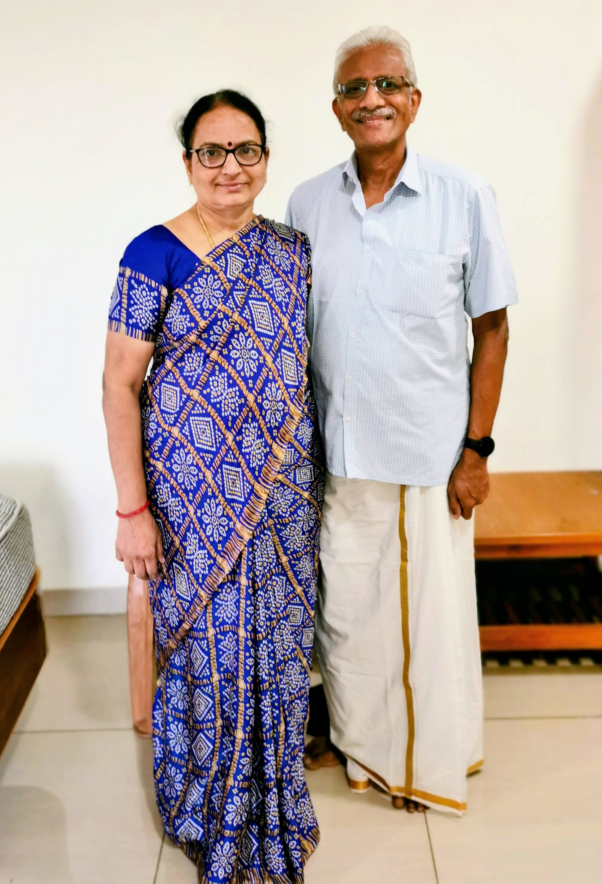
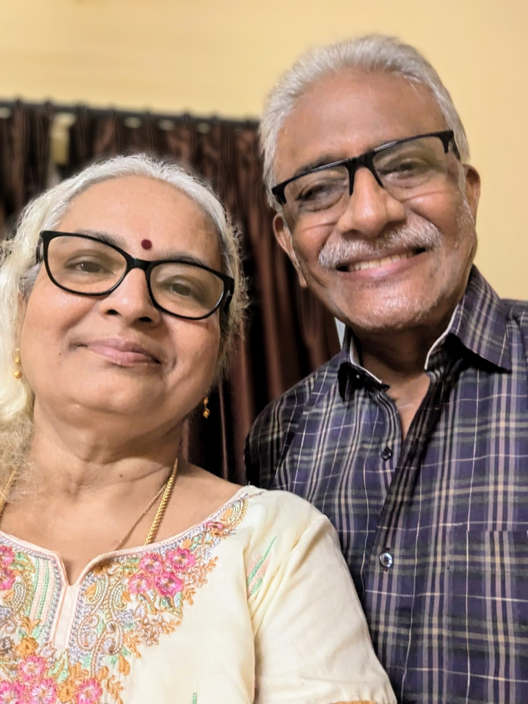
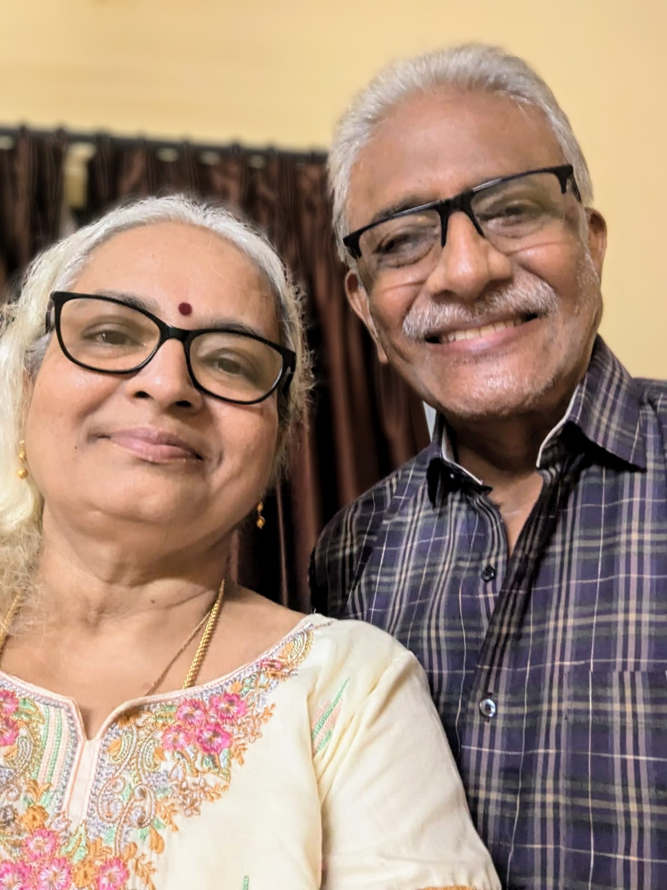

Welcome to Meera's Kitchen


Meet the Heart and Soul of Meera's Kitchen
Meera and Anand Manohar have spent a lifetime cultivating the perfect balance of tradition, innovation, and love in their culinary endeavors. At the heart of this family duo is Meera, the brilliant master chef whose passion for cooking was ignited in her early years, growing up in the bustling kitchens of Tamil Nadu. With a deep love for authentic Indian flavors, Meera has honed her skills over decades, mastering the art of transforming simple ingredients into gourmet experiences. Her cooking is not just about food; it's an art form that brings people together, fosters connection, and celebrates the heritage of South India with a modern twist.

Beside her, every step of the way, is her devoted partner Anand, the quiet but steadfast sous chef. Anand's culinary journey began as a helper to Meera, but over time, he has developed a deep expertise in preparing flavorful, soulful dishes. Whether it's perfecting a family recipe passed down through generations or introducing new techniques to keep the kitchen exciting, Anand has become an invaluable part of the kitchen, embodying the perfect harmony of precision and passion. Together, they create dishes that not only tell a story but evoke memories of home, comfort, and family.
From festivals to intimate family dinners, Meera and Anand have perfected the art of creating culinary masterpieces that have delighted loved ones for years. Their kitchen is a sanctuary of flavors, where tradition meets creativity, and every meal is an opportunity to share their journey with the world. At Meera's Kitchen, you'll find not just food, but the essence of love, culture, and decades of expertise wrapped in every dish.
Scroll down to read the reviews left by some of our regulars!